Operation Spencer · prévias PS1 · membros
Cinco personagens, seis zumbis masculinos, três femininos e Cerberus. Nove zumbis revisados com danos variados nas mãos/pés e uma variante sem braço esquerdo. Mantidos olhos brancos, cabelo ralo, sangue, roupas rasgadas e lesões ósseas distintas.
Conceitos visuais para avaliação antes da modelagem, gerados por image_gen. Não são GLBs nem capturas do Godot. A mecânica de arrancar membros por tiros foi citada como futura e não foi implementada nesta etapa.
Jill Valentine
Personagem aprovado · rosto PS1 simplificado
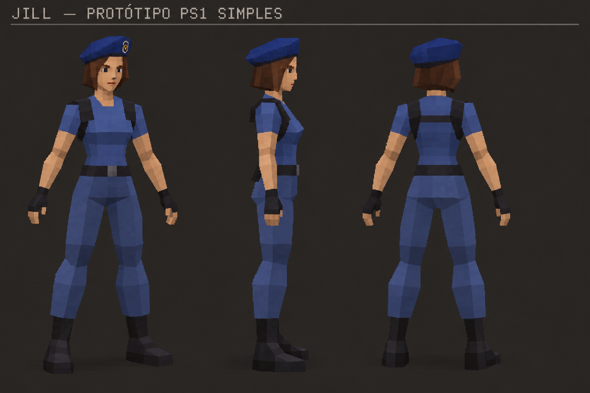
Chris Redfield
Personagem aprovado · rosto PS1 simplificado
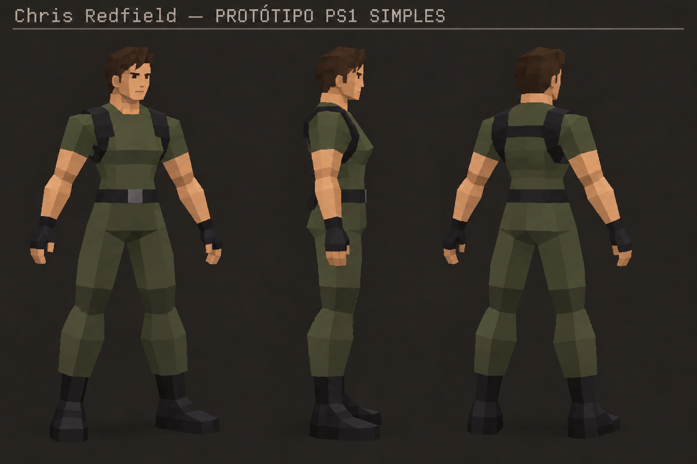
Albert Wesker
Personagem aprovado · rosto PS1 simplificado
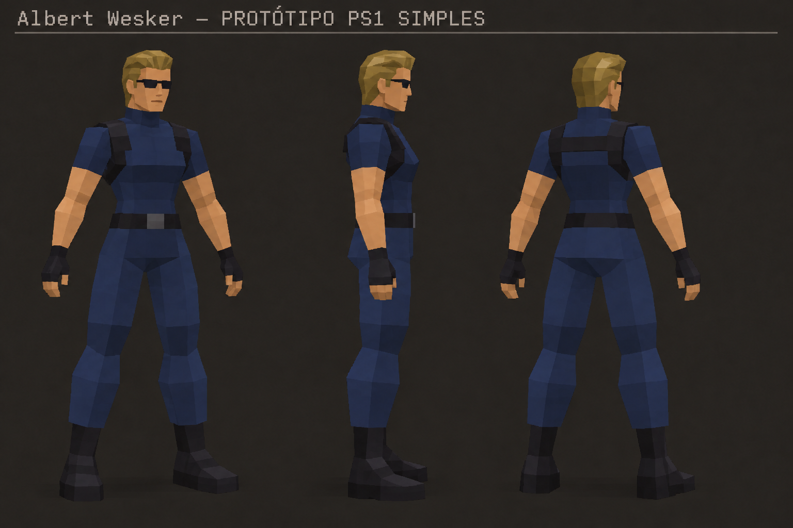
Rebecca Chambers
Personagem aprovado · rosto PS1 simplificado
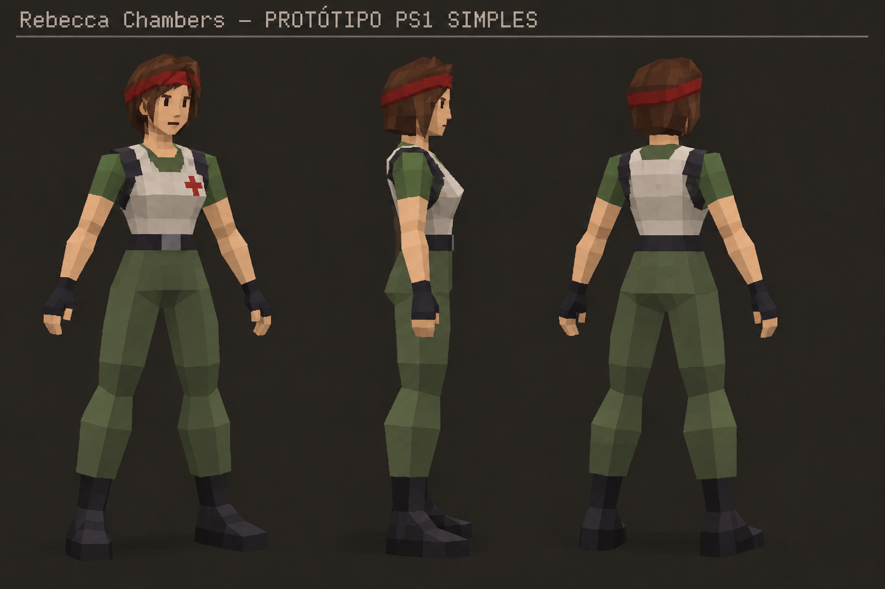
Barry Burton
Personagem aprovado · rosto PS1 simplificado
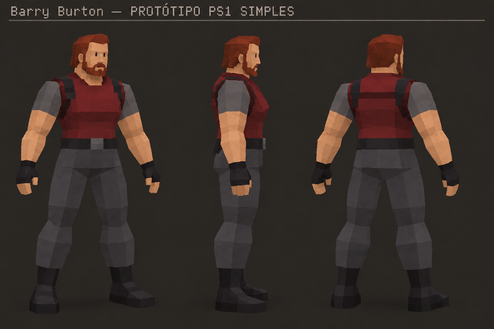
Zumbi masculino 0
Sapato esquerdo aberto e dedos da mão direita faltando
Lesões anteriores: Costelas e canela.
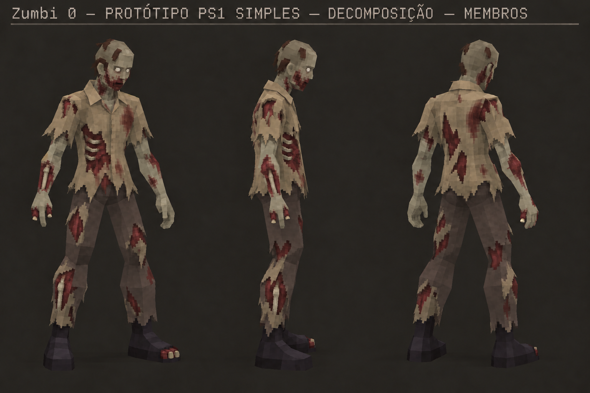
Zumbi masculino 1
Sem braço esquerdo inteiro; mão direita mutilada e sapato aberto
Lesões anteriores: Clavícula, ombro e braço.
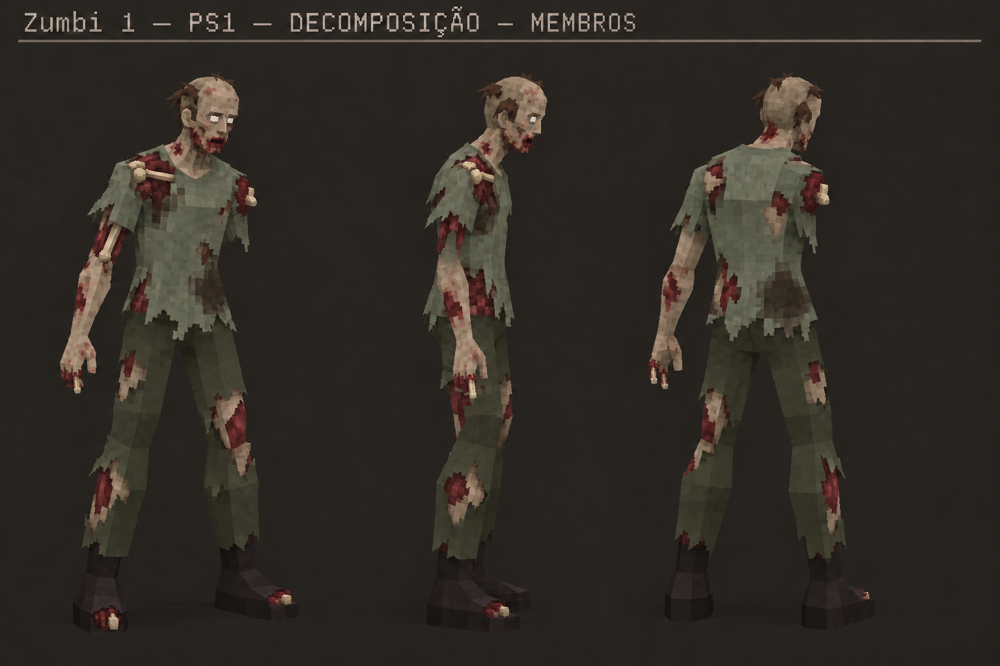
Zumbi masculino 2
Sapato direito aberto e dedos da mão esquerda faltando
Lesões anteriores: Crânio e mandíbula.
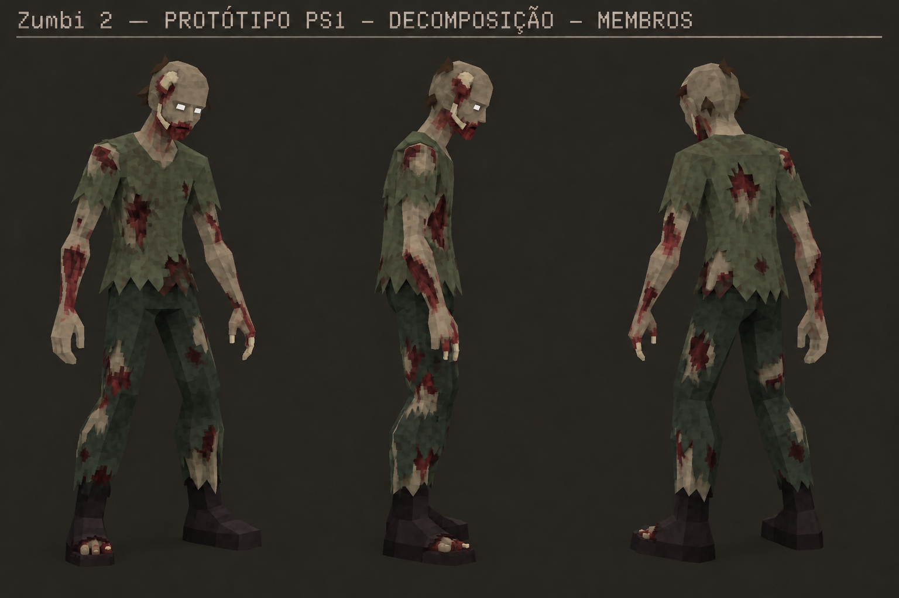
Zumbi masculino 3
Dois sapatos rasgados e ferimentos diferentes nos dedos das mãos
Lesões anteriores: Fêmur e joelho.
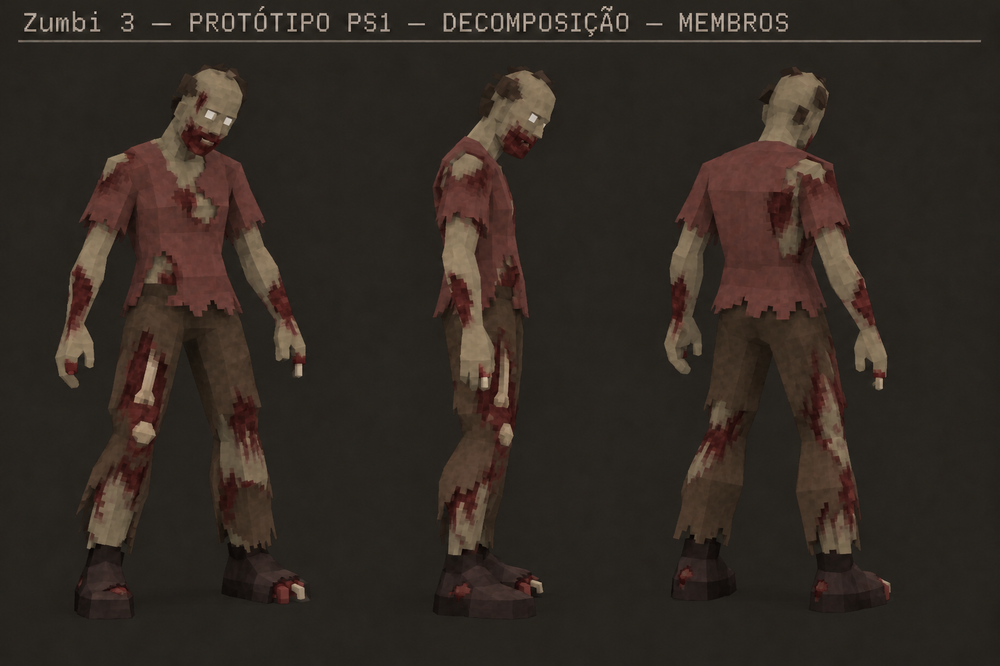
Zumbi masculino 4
Dano concentrado nas mãos; dedos ausentes e parcialmente reduzidos a osso
Lesões anteriores: Antebraço, cotovelo e mão.
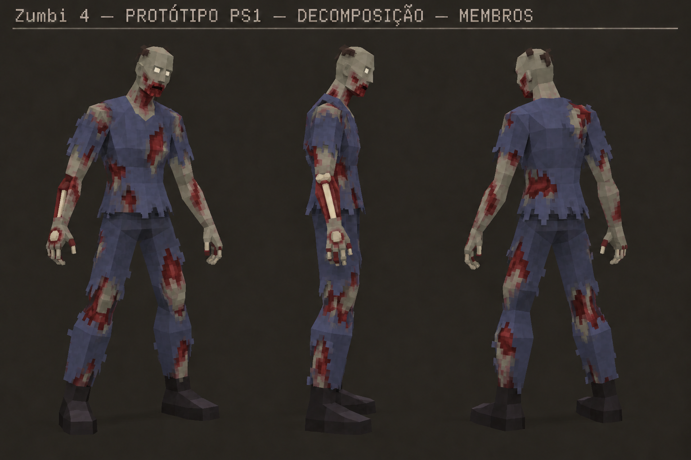
Zumbi masculino 5
Sapato esquerdo rasgado e dedos mutilados
Lesões anteriores: Escápula, clavícula e canela.
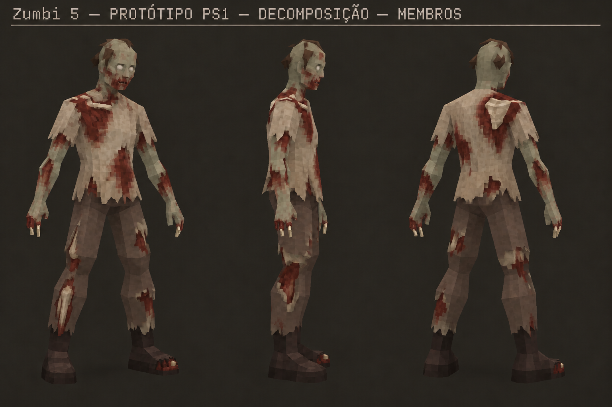
Zumbi feminino 1
Sapato direito aberto e danos nos dedos das duas mãos
Lesões anteriores: Clavícula e braço.
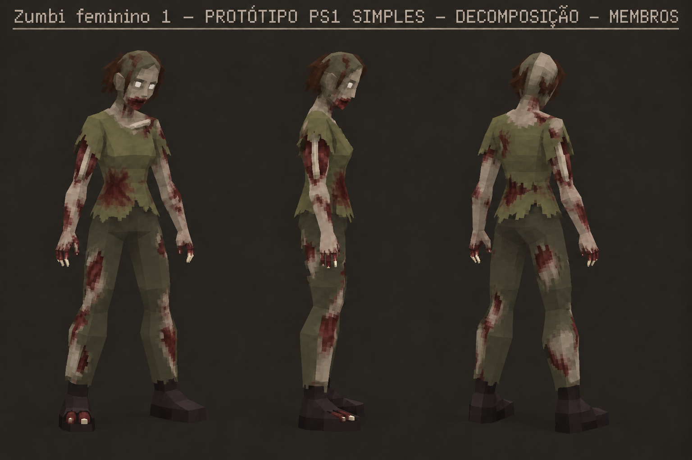
Zumbi feminino 2
Sapato esquerdo aberto e dedos da mão direita feridos
Lesões anteriores: Joelho e canela.
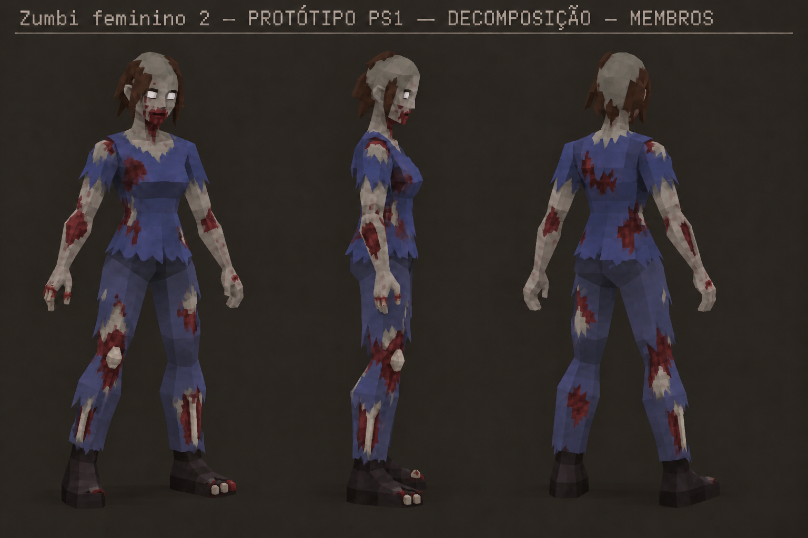
Zumbi feminino 3
Danos concentrados nos dedos das mãos; sapatos preservados
Lesões anteriores: Crânio e antebraço.
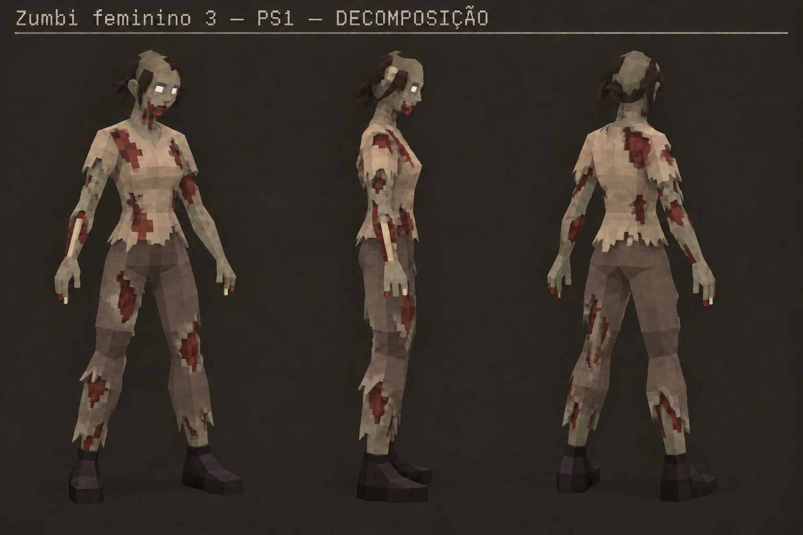
Cerberus
Costelas e pata dianteira; feridas no pescoço, ombro e flancos
Lesões anteriores: Costelas e pata dianteira; feridas no pescoço, ombro e flancos.
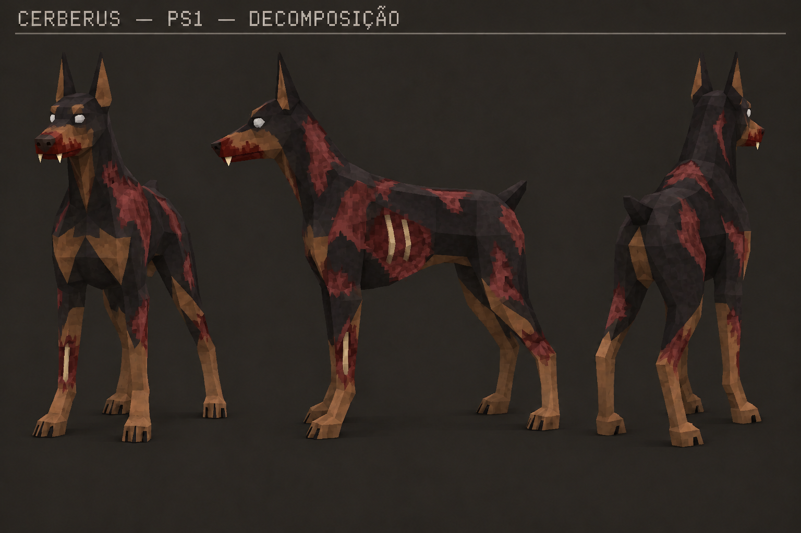
13/10/2026 · Prompts, fontes e proveniência